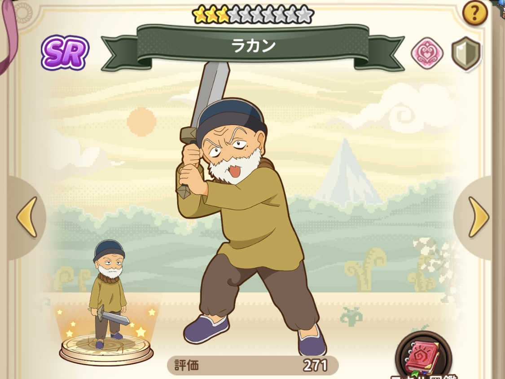
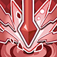

～ SR(最大Lv.160) ～
SRのスキルは次の通りです。
▶ 通常攻撃 / スキル / 専用スキル / 星UPスキル / 基礎スキルx3
星UPスキルと基礎スキルは職業によって異なります。
職業 |
星UPスキル |
基礎スキル |
|---|---|---|
|
タンク 生命値+25% / 防御力+25% 会心耐性+10% / 会心ダメージ-20% |
支援魔法 |
生命値 / 防御力 / 攻撃力 |
各お友達の属性、職業、評価値はコチラ。テーブルヘッダーを押すとソートできます。
お友達 |
属性 |
職業 |
評価値 |
|---|---|---|---|
ラカン |
心 |
タンク |
----- |
同じ属性のキャラを2体以上編成するとバフが付与されます。
属性 |
効果 |
効果説明 |
所持お友達 |
|---|---|---|---|
技 |
技法の力 |
・技属性を2人編成
・技属性を3人編成
・技属性を4人編成
・技属性を5人編成
・技属性を6人編成
・技属性を8人編成 |
|
心 |
思想の力 |
・心属性を2人編成
・心属性を3人編成
・心属性を4人編成
・心属性を5人編成
・心属性を6人編成
・心属性を8人編成 |
ラカン |
体 |
本能の力 |
・体属性を2人編成
・体属性を3人編成
・体属性を4人編成
・体属性を5人編成
・体属性を6人編成
・体属性を8人編成 |
|
・ラカン / 心属性 / タンク
入手方法 ▶ ゲーム開始時に入手 / 基礎魔法陣
漫画登場箇所 ▶ 魔法陣グルグル(11巻)第98章「ゲソックの森Ⅱ」
アニメ登場箇所 ▶ 3期 17話-A「鳴らせ！エルエル村！」
画像 |
ジャンル |
評価 |
スキル名 |
効果 |
|---|---|---|---|---|
固定 |
42 |
通常攻撃 |
敵単体に22.5%+1700のダメージを与える。 |
|
|  | 固定 |
52 |
渾身の一撃 |
ランダムな敵1体に39.4%+3060のダメージを与える。 |
固定 |
26 |
冒険家 |
1～2ターン目、見方が単体攻撃を受けた時、50%の確率で援護(ダメージを引き受け、受けるダメージを8.5%減少させる)を行う。 |
|
固定 |
10250 |
支援魔法 |
・PvE時、以下の能力を獲得 |
|
 |
入替可 |
450 |
生命値 |
戦闘開始後、生命値+10%。 |
 |
入替可 |
450 |
防御力 |
戦闘開始後、防御力+10%。 |
 |
入替可 |
450 |
攻撃力 |
戦闘開始後、攻撃力+6%。 |
Use Tools
bootstrap / SergeLand Image Zoomer / table-sort ©2022 totchira
魔法陣グルグル ほしくず大冒険のプレイは『コチラ』からどうぞ